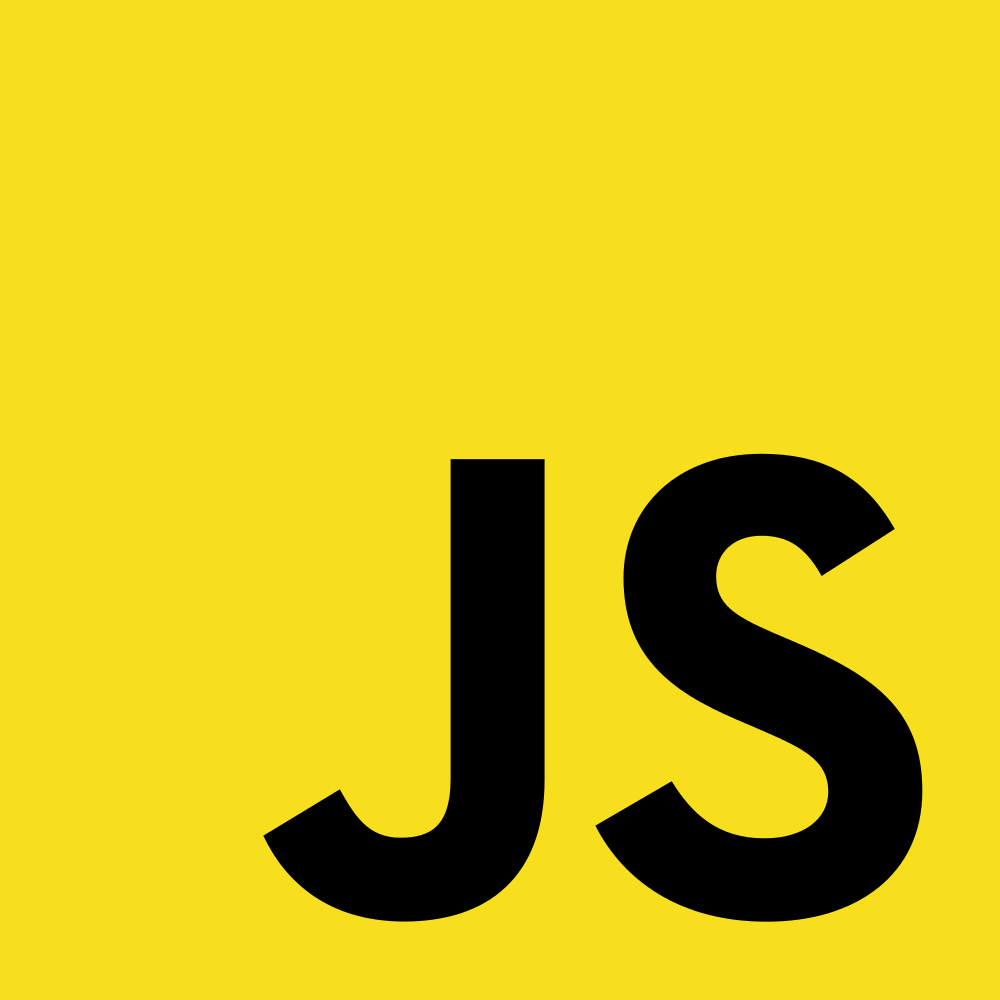

Çalışma Yapısı
Ve Genel Mimarisi
* Javascript kodlama da kodlama yoğunluğu genelde fazladır. Kodlar genelde üstten alta doğru sıralanarak yazılır ve sunucu da tarayıcı da kodları bu şekilde sıraya dizerek yorumlar.
var x,y, z;
x = 10;
y = 20;
z = x + y;
document.write(z);
* Tüm programlama dillerinde olduğu gibi kod bloklarının birbirleri ile çakışmasını önlemek için belirli ayraçlar kullanılır. Javascriptte de kod parçacığını bir diğerinden ayırmak ve hataya mahal vermemek için noktalı virgül kullanılır (;).
var x,y, z;
x = 10;
y = 20;
z = x + y;
document.write(z);
**Javascriptte boşluk kullanımı Javascript kodladığınızda bırakacağınız boşlukların bir önemi yoktur.
* Javascript kodlarının uzun olması okumayı ve anlamayı zorlaştıracaktır bu yüzden, satırlara ayırarak yazmak her zaman daha kullanışlıdır.

Genel Mimari: Frontend dillerinden en önemlilerinden bir tanesi Javascript’tir. Web tarayıcılarının etkin bir şekilde kullanılması için geliştirilmiştir. Kullanıcıyla etkileşimin artırılması, iş yükünün sunuculardan istemcilere taşınması, daha görsel animasyonlu web siteleri/ web uygulamaları geliştirilmesi gibi kullanım alanları vardır. 1995 yıllarında çıktı. Java diliyle isim benzerliği dışında hiçbir alakası yoktur. Javasvript standartları Ecma International firması tarafından ECMASCRIPT standartlarıyla belirlenir. Günümüzde kullanılan ECMASCRIPT standardı 5.1 sürümüdür. Ve bu standart Javascript 1.8.1 ile desteklenmektedir. Ancak şu aralar ECMASCRIPT 6 standardı üzerinde çalışmalar devam etmektedir. Javascript prototip bazlı nesne yönelimli programlama, fonksiyonel programlama, imparatif programlama paradigmalarını destekler. Genellikle tarayıcılarda kullanılır. Google’ın Chrome tarayıcısını ve bu tarayıcı içerisindeki V8 Javascript motorunu geliştirmesiyle Javascript performansında ve gelişimde büyük yükselişler oldu. Bu Javascript motorunun gücü sayesinde daha önce yapılamayan birçok uygulama yapıldı. Ve ilk defa Javascript frontend’den çıkarak Backend tarafına geçiş yaptı ve Nodejs doğdu.